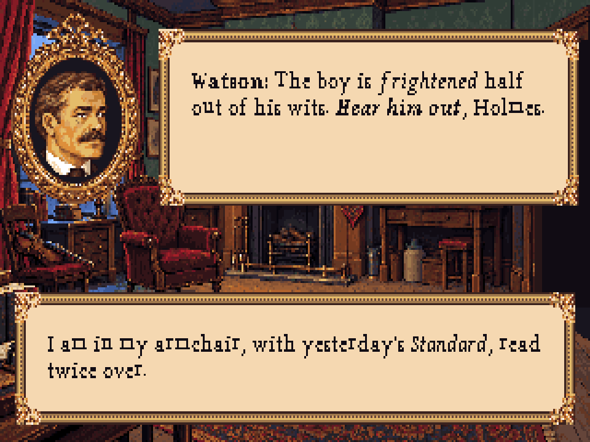
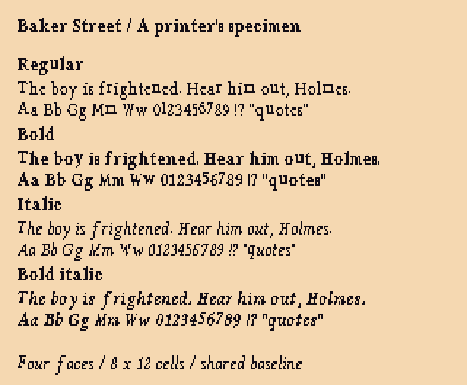
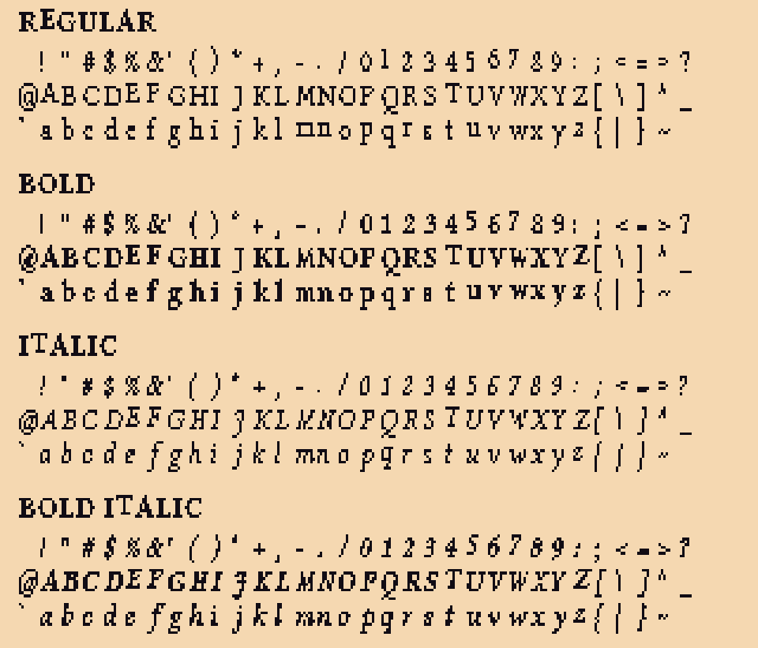

Rejected study: this rasterized print-font conversion has been superseded for review by native bitmap font candidates.
A bookish serif family for the Victorian UI: regular, bold, italic and bold italic, each with its own drawn letterforms. Real 8×12 bitmap cells, proportional spacing, a shared baseline, and crisp pixels.

Mixed: bold speaker name, italic emphasis, bold italic phrase. Newspaper title Standard is italic in the narration.
Visual review using the new bitmap sheets. The installed game engine supports one font per text box; mixed styles within one line still require an engine change. Emphasis here is a proposed art treatment, not an edit to the script.

Workflow, licence & handoff · Styled-run example · Font manifest · Editable regular sheet · Victorian UI study